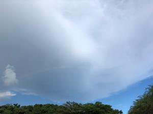
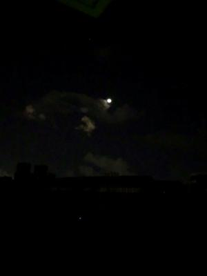
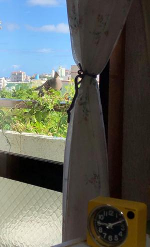

うるがいの話 ある日
最新: パラチケットのメール
うるがいとは 前提知識です
カニの画像をクリックすると『うるがいの話』サイトを表示します
うるがい(ｳﾙｶﾞｲ urugai)とは、『もずくがに』の名前でとても大きくなります。
たながー（ﾀﾅｶﾞｰtanagaa）とは手長えびのことで、何種類かあり大きいのは車 エビぐらいになります。
ぶながー(bunagaa)とは、赤い髪の毛、赤い身体、そして身長は１ｍ２０ｃｍ ぐらい、川の蟹を食べているの目撃された。場所は沖縄県国頭郡大宜味村のと ある村僕の隣近所に住んでいる爺さんから、聞いた話です。
2021年09月04日 (土）
パラチケットのメール
15:30



お！、昨日の夜メールが来た。なんと、チケットが・・・、もともと観戦する
つもりは、はなからなく、ただ記念に欲しいと思っていただけに素直にうれし
い。ただし、印刷は来週火曜日から、印刷できたらプログに載せよう。
［東京2020／Tokyo 2020］観戦チケット（pdfファイル）
の発行について／Ticket down
大会をご観戦いただけなかった皆さまから頂戴しましたチケットの記念発行に
ついてのご要望を踏まえ、この度、公式チケット販売サイトで購入いただいた
オリンピック・パラリンピック観戦チケットについて、ホームプリントで発行
（PDFのダウンロード）できるようにいたしました。